House style candidates (Muse muse-image-1.0, reasoning high)
Same raccoon (edit of /heroes/raccoon.webp) and same elf-gathering scene (text-only generation) in each style. Original for reference: current raccoon.

ROUND 3 Scene rule: no energy swirls
The twist is a solid object made of the scene's own material; at most one glowing light. Spec: design/31-house-style.md
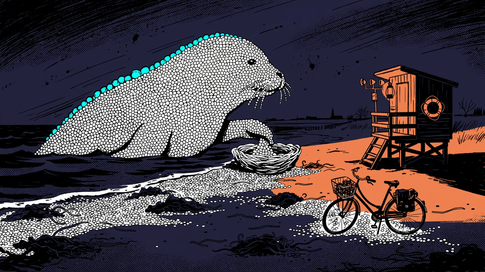
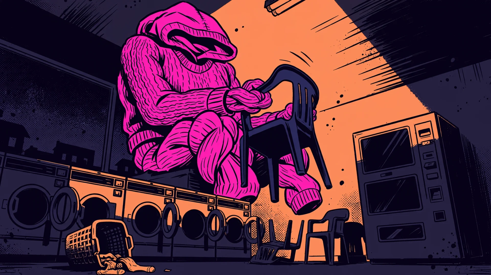
Lobby / attract v2 (/lobby/v2/)
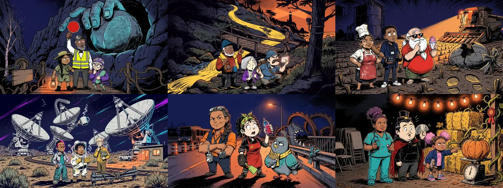
SCENE_RULE
The fantasy twist is a concrete physical object made of the scene's own material (vines knitting a sweater, a mailbox with teeth, a guardrail tied in a bow), drawn solid with ink outlines and flat color, funny and a little unsettling. At most ONE glowing light source in the whole image. No energy swirls, no rings, no beams, no auras, no magic sparkles, no glowing particles, no lightning, no glowing outlines.
COLOR v2
Color script: the ordinary real world is flat deep indigo night and warm sodium-orange light with big solid-black shadow shapes. The impossible thing keeps its own real materials and colors and stands out by shape, scale and one flat neon accent color (only one of hot magenta, electric cyan or acid yellow), never by glowing.
FINAL Neon Ink (A energy + B inks): house style
CD picked A+B blend. Same raccoon edit + elf scene. Spec: design/31-house-style.md
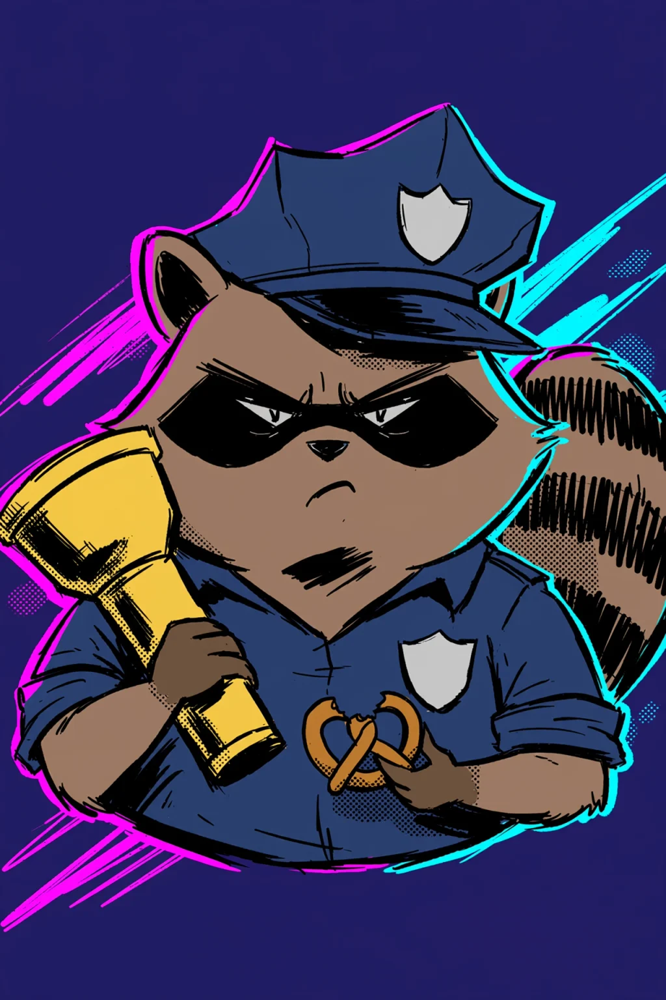
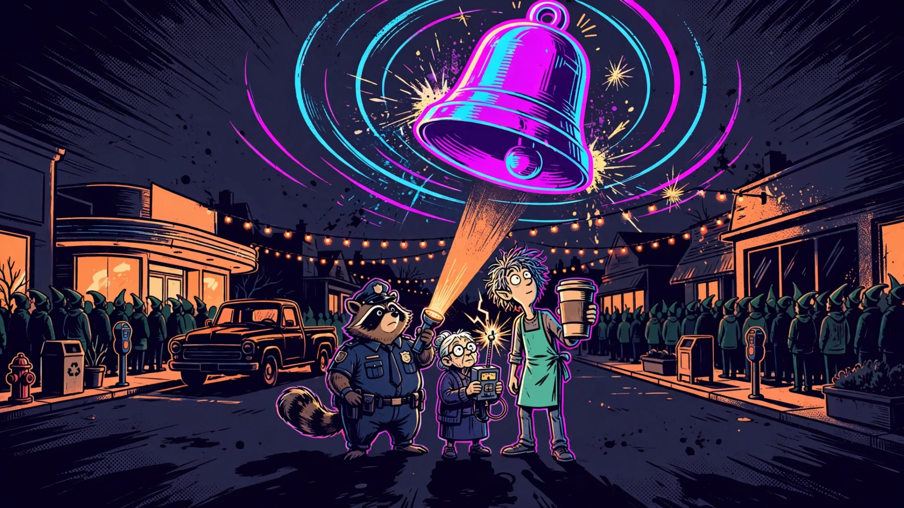
18 new ready-made heroes (/heroes/v2/)
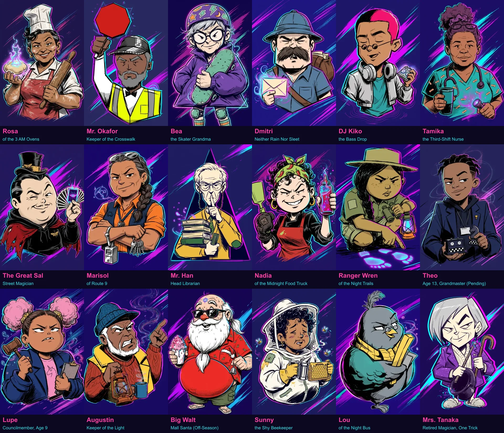
STYLE (scenes)
Hand-inked neon comic illustration: clean, confident brush-ink linework with bold outer contours and thinner inner lines, slightly imperfect hand-drawn edges; simple graphic shapes and big readable silhouettes; flat matte cel colors with one hard shadow tone and bold solid-black shadow shapes on the dark side of every form; one dramatic key light with a hard neon rim light; lively comic energy with a few speed lines, ink spatter and spark marks; sparse Ben-Day halftone dots only in shadows and skies; limited palette: deep indigo-black and warm sodium orange plus at most three neon spot colors (hot magenta, electric cyan, acid yellow). Like a hand-printed indie comic cover, not a digital painting: no glossy gradients, no plastic shine, no airbrush, no 3D render look, no fine micro texture, no lens blur
CHARACTER_STYLE
Hand-inked neon comic character design: clean, confident brush-ink linework with bold outer contours and thinner inner lines, slightly imperfect hand-drawn edges, flat matte cel colors with one hard shadow tone and bold solid-black shadow shapes, a hard magenta and cyan neon rim light, sparse halftone dots in the shadows only. Consistent stylized proportions: big head, simple chunky body, strong expressive hands, one clear geometric body shape (bean, pear, rectangle or triangle). Small graphic eyes (dots, almonds or slits, no shiny highlights), expressive eyebrows and mouth doing the acting, simplified angular nose and ears, two or three bold signature features that read at avatar size. Clearly a drawn comic character, not a realistic person and not a TV cartoon with huge round eyes: no realistic faces, skin texture, pores or fur strands, no glossy gradients, no plastic shine, no 3D render look.
A Neon Multiverse (kinetic comic animation)
Closest to the current look (the edit kept the old portrait pose). Busy, detailed comic; very readable heroes.
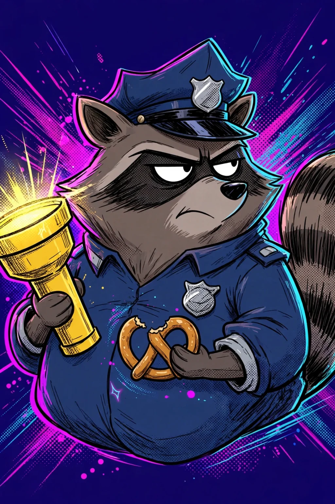
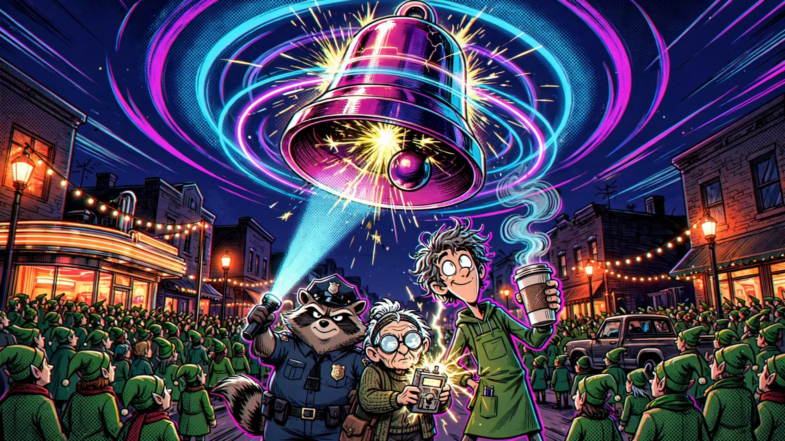
Style prompt
Kinetic comic-book animation frame, like a still from a mixed-media animated superhero film: bold graphic shapes over volumetric 3D-feeling forms, hand-drawn ink hatching and crisp contour lines layered on top, big fields of Ben-Day halftone dots, offset-print misregistration with magenta and cyan ghost edges (chromatic aberration), speed lines and stepped-frame motion energy, hot neon rim light in magenta and electric cyan with acid-yellow pops, saturated pop colors against a deep indigo night
Character clause
Character design: stylized chunky proportions with confident attitude, small sharp graphic eyes (narrow almond or slit shapes, never big round cartoon eyes), angular simplified features, dynamic three-quarter pose
Full portrait prompt (21022 ms)
Completely re-draw this character in a NEW art style; keep only who they are, not how they were drawn. Style: Kinetic comic-book animation frame, like a still from a mixed-media animated superhero film: bold graphic shapes over volumetric 3D-feeling forms, hand-drawn ink hatching and crisp contour lines layered on top, big fields of Ben-Day halftone dots, offset-print misregistration with magenta and cyan ghost edges (chromatic aberration), speed lines and stepped-frame motion energy, hot neon rim light in magenta and electric cyan with acid-yellow pops, saturated pop colors against a deep indigo night. Character design: stylized chunky proportions with confident attitude, small sharp graphic eyes (narrow almond or slit shapes, never big round cartoon eyes), angular simplified features, dynamic three-quarter pose. Character: the same character from the reference image: Gus, a grumpy chubby raccoon mall security cop with a dark-blue police cap, black raccoon eye mask, dark-blue uniform with a silver badge, holding a yellow flashlight and a half-eaten pretzel, one eyebrow raised in deadpan suspicion, striped tail. Composition: bust portrait, head and shoulders fill the frame, face in the upper half, centered, strong readable silhouette with a bright magenta-cyan rim light, against a plain deep-indigo background with a few graphic streaks; the face must read clearly as a tiny circular avatar. Original fictional characters only, no real people, no celebrities, no logos or brands. No text, no letters, no words, no numbers, no captions, no readable signs, no speech bubbles, no comic panels or borders, no watermark, no signature. Family-friendly.
Full scene prompt (25888 ms)
Kinetic comic-book animation frame, like a still from a mixed-media animated superhero film: bold graphic shapes over volumetric 3D-feeling forms, hand-drawn ink hatching and crisp contour lines layered on top, big fields of Ben-Day halftone dots, offset-print misregistration with magenta and cyan ghost edges (chromatic aberration), speed lines and stepped-frame motion energy, hot neon rim light in magenta and electric cyan with acid-yellow pops, saturated pop colors against a deep indigo night. Wide cinematic shot, slightly low angle: Main street of a small American town at night during a record-breaking elf costume gathering: hundreds of ordinary townspeople in matching green elf costumes and pointy hats crowd the sidewalks, a diner, a pickup truck, string lights over the street. Above the rooftops floats the single impossible thing: a colossal glowing jingle bell the size of a water tower, humming, its sound visible as rippling neon rings, and every elf hat in the crowd tilting toward it. Three heroes stand together in the middle ground, clearly readable as a team: Gus, a chubby raccoon mall cop in a dark-blue cap and uniform with a flashlight; Dolores, a tiny white-haired grandma ghost hunter with huge round glasses and a cardigan holding a crackling homemade ghost meter; Juno, a lanky over-caffeinated young barista with wild frizzy hair, a green apron and a giant to-go coffee cup. Character design: stylized chunky proportions with confident attitude, small sharp graphic eyes (narrow almond or slit shapes, never big round cartoon eyes), angular simplified features, dynamic three-quarter pose; the crowd is stylized and simplified too. Color: the ordinary world in deep indigo night and warm sodium-orange streetlight; the impossible bell is the brightest, most saturated thing in the frame, lit from within by hot magenta and electric cyan with acid-yellow sparks. One clear focal point, bold readable silhouettes. Original fictional characters only, no real people, no celebrities, no logos or brands. No text, no letters, no words, no numbers, no captions, no readable signs, no speech bubbles, no comic panels or borders, no watermark, no signature. Family-friendly.
B Neon Noir (graphic-novel noir-pop)
Most distinct from Gravity Falls. Huge black shadows + 4 neon spot colors: reads across a room, matches the nightclub lobby.
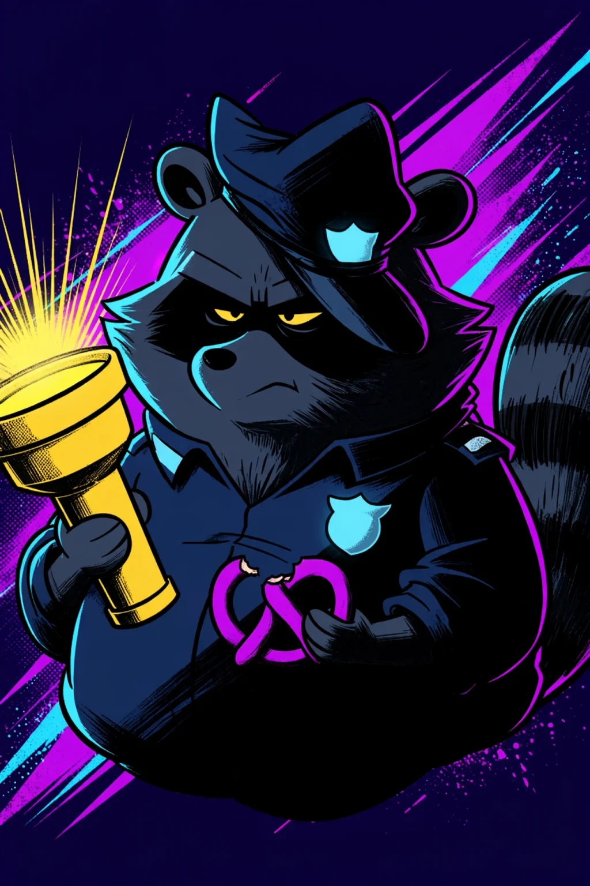
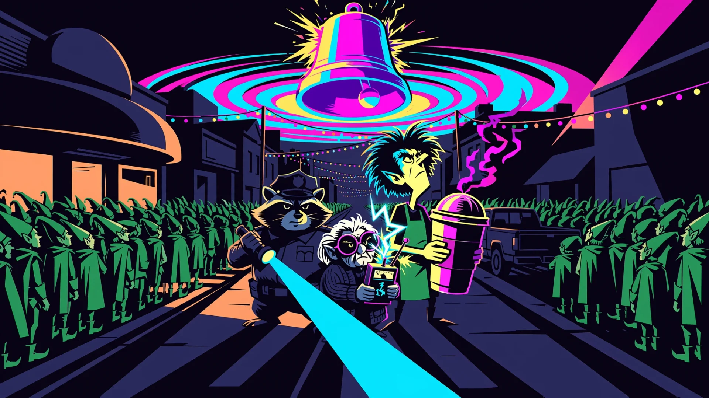
Style prompt
Graphic-novel noir-pop illustration: massive solid black ink shadows that swallow half of every form, razor-sharp chiseled shapes, bold brush-ink edges, minimal interior detail, flat color blocks only, everything else ink black and deep indigo, with hot magenta, electric cyan and acid yellow used as glowing spot colors on light sources, rims and accents, one dramatic hard light source casting long angular shadows, stark poster-like silhouettes, high-contrast pulp comic cover energy
Character clause
Character design: blocky, chiseled, heavily stylized shapes, eyes as small hard glints or slits inside deep black shadow, square jaw and angular planes, a tough hard-boiled pose
Full portrait prompt (30655 ms)
Completely re-draw this character in a NEW art style; keep only who they are, not how they were drawn. Style: Graphic-novel noir-pop illustration: massive solid black ink shadows that swallow half of every form, razor-sharp chiseled shapes, bold brush-ink edges, minimal interior detail, flat color blocks only, everything else ink black and deep indigo, with hot magenta, electric cyan and acid yellow used as glowing spot colors on light sources, rims and accents, one dramatic hard light source casting long angular shadows, stark poster-like silhouettes, high-contrast pulp comic cover energy. Character design: blocky, chiseled, heavily stylized shapes, eyes as small hard glints or slits inside deep black shadow, square jaw and angular planes, a tough hard-boiled pose. Character: the same character from the reference image: Gus, a grumpy chubby raccoon mall security cop with a dark-blue police cap, black raccoon eye mask, dark-blue uniform with a silver badge, holding a yellow flashlight and a half-eaten pretzel, one eyebrow raised in deadpan suspicion, striped tail. Composition: bust portrait, head and shoulders fill the frame, face in the upper half, centered, strong readable silhouette with a bright magenta-cyan rim light, against a plain deep-indigo background with a few graphic streaks; the face must read clearly as a tiny circular avatar. Original fictional characters only, no real people, no celebrities, no logos or brands. No text, no letters, no words, no numbers, no captions, no readable signs, no speech bubbles, no comic panels or borders, no watermark, no signature. Family-friendly.
Full scene prompt (23868 ms)
Graphic-novel noir-pop illustration: massive solid black ink shadows that swallow half of every form, razor-sharp chiseled shapes, bold brush-ink edges, minimal interior detail, flat color blocks only, everything else ink black and deep indigo, with hot magenta, electric cyan and acid yellow used as glowing spot colors on light sources, rims and accents, one dramatic hard light source casting long angular shadows, stark poster-like silhouettes, high-contrast pulp comic cover energy. Wide cinematic shot, slightly low angle: Main street of a small American town at night during a record-breaking elf costume gathering: hundreds of ordinary townspeople in matching green elf costumes and pointy hats crowd the sidewalks, a diner, a pickup truck, string lights over the street. Above the rooftops floats the single impossible thing: a colossal glowing jingle bell the size of a water tower, humming, its sound visible as rippling neon rings, and every elf hat in the crowd tilting toward it. Three heroes stand together in the middle ground, clearly readable as a team: Gus, a chubby raccoon mall cop in a dark-blue cap and uniform with a flashlight; Dolores, a tiny white-haired grandma ghost hunter with huge round glasses and a cardigan holding a crackling homemade ghost meter; Juno, a lanky over-caffeinated young barista with wild frizzy hair, a green apron and a giant to-go coffee cup. Character design: blocky, chiseled, heavily stylized shapes, eyes as small hard glints or slits inside deep black shadow, square jaw and angular planes, a tough hard-boiled pose; the crowd is stylized and simplified too. Color: the ordinary world in deep indigo night and warm sodium-orange streetlight; the impossible bell is the brightest, most saturated thing in the frame, lit from within by hot magenta and electric cyan with acid-yellow sparks. One clear focal point, bold readable silhouettes. Original fictional characters only, no real people, no celebrities, no logos or brands. No text, no letters, no words, no numbers, no captions, no readable signs, no speech bubbles, no comic panels or borders, no watermark, no signature. Family-friendly.
C Neon Arcade (painterly stylized 3D)
Most "premium" and lush. Note: the model turned the crowd and heroes into actual elves (ears); needs a prompt fix if picked.
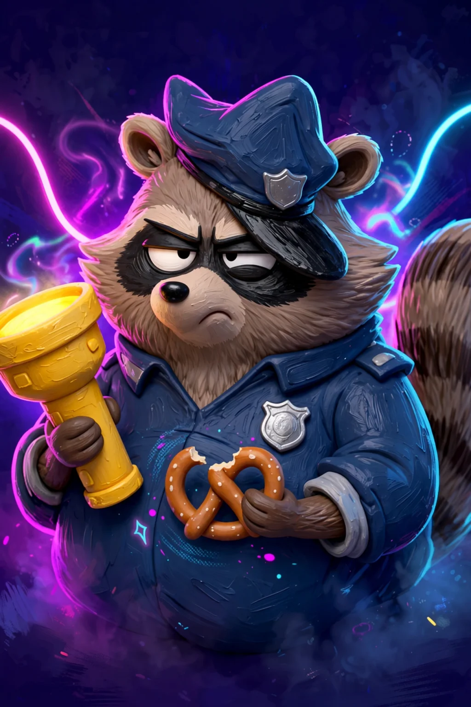
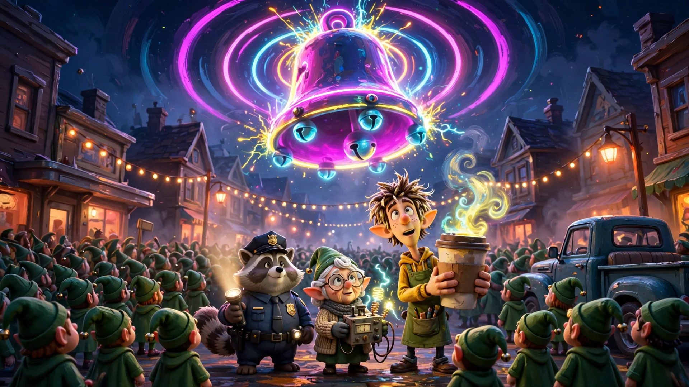
Style prompt
Painterly stylized 3D animation, like a hand-painted animated feature concept frame: chunky toy-like characters with oversized heads, hands and feet, sculpted simplified planes, visible painterly brush strokes and hand-painted textures on every surface, glowing neon tubes and accents in hot magenta, electric cyan and acid yellow casting colored light onto everything, soft volumetric haze and bloom, rich saturated arcade colors, appealing collectible-figure shapes
Character clause
Character design: chunky stylized proportions (big head, big hands, short legs), sculpted painted textures, small expressive eyes with a knowing look (not huge round eyes), clearly a stylized animated character
Full portrait prompt (23794 ms)
Completely re-draw this character in a NEW art style; keep only who they are, not how they were drawn. Style: Painterly stylized 3D animation, like a hand-painted animated feature concept frame: chunky toy-like characters with oversized heads, hands and feet, sculpted simplified planes, visible painterly brush strokes and hand-painted textures on every surface, glowing neon tubes and accents in hot magenta, electric cyan and acid yellow casting colored light onto everything, soft volumetric haze and bloom, rich saturated arcade colors, appealing collectible-figure shapes. Character design: chunky stylized proportions (big head, big hands, short legs), sculpted painted textures, small expressive eyes with a knowing look (not huge round eyes), clearly a stylized animated character. Character: the same character from the reference image: Gus, a grumpy chubby raccoon mall security cop with a dark-blue police cap, black raccoon eye mask, dark-blue uniform with a silver badge, holding a yellow flashlight and a half-eaten pretzel, one eyebrow raised in deadpan suspicion, striped tail. Composition: bust portrait, head and shoulders fill the frame, face in the upper half, centered, strong readable silhouette with a bright magenta-cyan rim light, against a plain deep-indigo background with a few graphic streaks; the face must read clearly as a tiny circular avatar. Original fictional characters only, no real people, no celebrities, no logos or brands. No text, no letters, no words, no numbers, no captions, no readable signs, no speech bubbles, no comic panels or borders, no watermark, no signature. Family-friendly.
Full scene prompt (20491 ms)
Painterly stylized 3D animation, like a hand-painted animated feature concept frame: chunky toy-like characters with oversized heads, hands and feet, sculpted simplified planes, visible painterly brush strokes and hand-painted textures on every surface, glowing neon tubes and accents in hot magenta, electric cyan and acid yellow casting colored light onto everything, soft volumetric haze and bloom, rich saturated arcade colors, appealing collectible-figure shapes. Wide cinematic shot, slightly low angle: Main street of a small American town at night during a record-breaking elf costume gathering: hundreds of ordinary townspeople in matching green elf costumes and pointy hats crowd the sidewalks, a diner, a pickup truck, string lights over the street. Above the rooftops floats the single impossible thing: a colossal glowing jingle bell the size of a water tower, humming, its sound visible as rippling neon rings, and every elf hat in the crowd tilting toward it. Three heroes stand together in the middle ground, clearly readable as a team: Gus, a chubby raccoon mall cop in a dark-blue cap and uniform with a flashlight; Dolores, a tiny white-haired grandma ghost hunter with huge round glasses and a cardigan holding a crackling homemade ghost meter; Juno, a lanky over-caffeinated young barista with wild frizzy hair, a green apron and a giant to-go coffee cup. Character design: chunky stylized proportions (big head, big hands, short legs), sculpted painted textures, small expressive eyes with a knowing look (not huge round eyes), clearly a stylized animated character; the crowd is stylized and simplified too. Color: the ordinary world in deep indigo night and warm sodium-orange streetlight; the impossible bell is the brightest, most saturated thing in the frame, lit from within by hot magenta and electric cyan with acid-yellow sparks. One clear focal point, bold readable silhouettes. Original fictional characters only, no real people, no celebrities, no logos or brands. No text, no letters, no words, no numbers, no captions, no readable signs, no speech bubbles, no comic panels or borders, no watermark, no signature. Family-friendly.